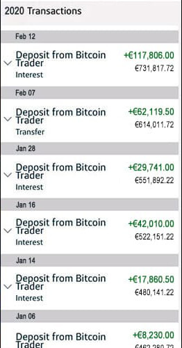
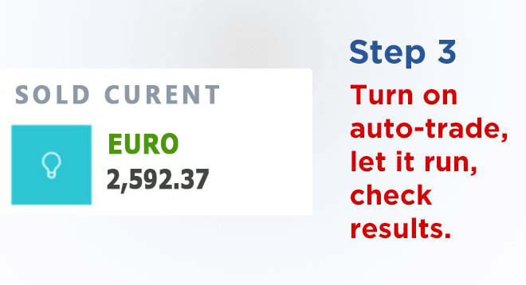

Güncel: Türkiye'nin önde gelen matematik profesörünün aylık geliri herkesi şaşırtıyor
GPTPRO BUGÜN TOPLAM 3172798 DOLAR TUTARINDA ÖDEME YAPTI!Türkiye'de herkes bu yöntemi kullanarak evinden milyonlarca dolar kazanabilir. Peki, bu yöntem yasal mı?
(GÜNCEL) - Türkiye Bilgi Teknolojileri Üniversitesi'nde matematik ve bilgisayar bilimleri profesörü olan Altan Çağlayan, liderliğini yaptığı geliştirici ekibinin, kripto para ticareti için herkesin gerçek zamanlı olarak otomatik olarak para kazanmasını sağlayan algoritmayı nasıl geliştirdiğini açıkladı.
Geçen hafta ulusal bir kanalda programa katılan Prof. Çağlayan, geliştirdiğini söylediği ve herkesi 3-4 ay içinde milyoner yapabilen yöntem hakkında konuştu. Prof. Çağlayan, bankaların bu yöntemi engelleyici tedbirler almadan herkesi bu inanılmaz fırsattan yararlanmaya çağırdı.
Röportajın yayınlanmasını takiben Ulusal Bank yöneticilerinin televizyon kanalını arayarak Prof. Çağlayan'ın katıldığı programın daha fazla yayılmasının engellenmesini istediği öğrenildi. Ne var ki iş işten geçmişti.
Olayın detayları şu şekilde:
Prof. Altan Çağlayan, Bilgi Teknolojileri Üniversitesi'nde bilgisayar yazılımlarında olasılık teorisi üzerine çalışan sıradan bir matematik ve bilgisayar bilimleri profesörüdür.
Yaptığı sayısız deney sonucunda, dileyen herkesin para kazanmasına yardımcı olan mükemmel bir algoritma bulmuştur. Bu algoritma otomatik olarak çalışarak kullanıcının bilfiil ilgilenmesini gerektirmeden kazanılan parayı kullanıcının hesabına aktarır. Bu algoritma iki ana bilgiye dayanmaktadır. İlki, kripto para satın almak için en uygun zamanlama stratejisini ortaya koyan yüzlerce gigabaytlık verinin analizidir. İkincisi ise piyasaya girmek ve kâra geçmek için kripto para biriminin değerindeki değişim oranıdır. Bu işlemler, kullanıcının bizzat katılımını gerektirmez. GPTPRO adı verilen bu yeni algoritma daha önce dünyada hiçbir yerde kullanılmamıştır. Yani dünyada mevcut tüm algoritmalar arasında en verimli olanıdır.
Televizyoncu Caner Beyaz, sunuculuğunu yaptığı programda konuk ettiği Prof. Çağlayan’dan bu benzersiz para kazanma yöntemiyle ilgili düşüncesini sordu:
"Başarılı olmamı sağlayan temel faktör, şüphesiz fırsatlardan hızlı bir şekilde faydalanmak oldu. Bugün itibarıyla ana gelir kaynağım, yeni otomatik kripto para alım satım programı GPTPRO oldu. Bu, şimdiye kadar kullandığım tek yöntemdir. Zengin olmamı sağlayan ve hayatımın geri kalanı için yeterli olacak küçük bir servet kazanmama yardımcı olan bu programdır. Bankalar engelleyici tedbirler almadan önce herkesi bu programı denemesini öneririm."
Sunucu Caner Beyaz’ın programda büyük şaşkınlık yaşadığı an ise Prof. Çağlayan’ın cep telefonunda Türkiye'de herkesin konuştuğu bu yeni kazanç programıyla ne kadar para kazandığını göstermesi oldu.
Programın süresi, Prof. Altan Çağlayan tüm detayları açıklamadan sona erdiği için bu sıradışı fırsat hakkında daha fazla bilgi edinmek için kendisiyle özel bir röportaj yaptık.
ÖZEL PROF. ALTAN Çağlayan RÖPORTAJI
Kripto para birimlerine yatırım yapmak için kullanılan GPTPRO adlı bu yeni platformu duymuş olabilirsiniz. Bu platform sıradan insanların hızla zenginleşmesine yardımcı olur. Gerçek olamayacak kadar mükemmel göründüğü için şüpheyle yaklaşabilirsiniz.
Prof. Çağlayan şöyle konuştu:
"Bugüne kadar GPTPRO algoritması hakkında ne düşündüğünü sorduğum her öğrencim, bunun mümkün olmadığını söyledi. Ama bir haftada ne kadar kazandığımı kendi gözleriyle gördüklerinde, hepsi denemek istedi.
GPTPRO platformunda para kazanmaya karar veren öğrencilerime bir hafta sonra izlenimlerini sordum. Hepsi bu platformun şimdiye kadar denedikleri en iyi ve en kolay para kazanma yollarından biri olduğunu söyledi. Bir hafta içinde on binlerce dolar kazandıklarını söylediler! Bu, şu anda kelimenin tam anlamıyla para kazanmanın en hızlı yoludur. Fakat bu imkan uzun süre devam etmeyecektir çünkü giderek daha fazla insanın platform hakkında haberi oluyor. Platformun kapatılması için bankaların yakında harekete geçeceğinden eminim."
GPTPRO NEDİR VE NASIL ÇALIŞIR?
GPTPRO platformunun çalışma mantığı son derece açık: Çoğu kişinin düşündüğünün aksine 21. yüzyılın en kazançlı yatırım aracı olan kripto paraya sıradan insanların yatırım yapmasını sağlar.
sanal para birim fiyatı 19.000 dolar seviyesinden düşmüş olmasına rağmen kripto para ticareti yapan kişiler hâlâ hayatlarından memnunlar. Neden? Çünkü sanal para dışında her gün alım satımı yapılan ve büyük kazançlar sağlayan binlerce farklı kripto para birimi daha var.
GPTPRO rekabetçi pazar koşullarında bile tüm bu kripto para birimlerinden kazanç elde etmenizi sağlar. Yapay zeka (AI) kullanarak, otomatik olarak uzun ve kısa vadeli satışları yönetir, böylece siz uyurken bile para kazanırsınız.
GPTPRO BUGÜN TOPLAM 3172798 DOLAR TUTARINDA ÖDEME YAPTI!...
...
BÜYÜK BANKALARIN BİLMENİZİ İSTEMEDİĞİ PARA KAZANMANIN KÂRLI SIRRI
Prof. Çağlayan şöyle devam ediyor:
"Ekonomik açıdan zor bir dönemden geçiyoruz. Bu zor dönem, insanların beklediği gerçek bir fırsat. Daha önce karşımıza hiç böylesine uygun bir fırsat çıkmamıştı. Sıradan insanlar bu fırsatı değerlendirerek kısa sürede zengin olabilirler.
Sıradışı ve garip geldiğinden bazıları bu fırsatı değerlendirmek için tereddüt edebilirler. Ayrıca çoğu kişinin de büyük bankalar saklamaya çalıştığı için bu yöntemden haberi yok. Bu bankalar tarafından yapılan propagandada kripto para birimleri ve GPTPRO sahtekârlık olarak sunuluyor. Neden? Çünkü elde edilen kâr vergilendirilmiyor, dolayısıyla bankalar için kârlı değil. Bankalar, müşterileri kendi başlarına büyük paralar kazanmayı öğrendiğinde kurumsal kârlılıklarının azalacağından endişe ediyorlar.
Kripto paranın hayatımızda devrim niteliğinde bir değişiklik olduğu tartışılmaz. Bu algoritmayı kullanmayanların da zengin olma fırsatını kaçırdığı bir gerçektir. Her yerde bu teknolojiden bahsettiğim için büyük finans şirketlerinden şimdiden tehditler alıyorum. Beni korkutamazlar. Türkiye'de bazıları gerçeği keşfetti bile. Her geçen gün daha fazla insan keşfediyor.
Bütün bunları şuna dayanarak söylüyorum: söylüyorum: Bu sırrı ifşa ettiğim için yüzlerce kişiden teşekkür mesajı aldım. Aldığım mesajlar arasında en hoşuma gideni, GPTPRO platformu üzerinden kazandığı parayla kız kardeşinin hayalindeki otomobili, Audi TT alan genç adamın mesajıdır. Bu platform, her insanın hayatını gerçekten biraz daha iyi hale getiriyor."

GPTPRO GERÇEKTEN ÇALIŞIYOR MU? BİZZAT TEST ETTİK
Genel yayın yönetmenimiz, GPTPRO platformunun evden para kazanmanın meşru bir yöntemi olduğunu teyit edene kadar Prof. Altan Çağlayan röportajının yayınlanmasına izin vermedi. Yöneticilerimiz, insanların zar zor kazandıkları paralarını kaybetmelerine yol açabilecek bilgilerin yayınlanmasını istemediler.
Onun için yazı işleri ekibimiz GPTPRO platformunu, gerçekten Prof. Çağlayan'ın anlattığı gibi çalıştığından emin olmak için. test etti. Portal editörümüz Burak Canoğlu test için gönüllü oldu ve kendi parasını kullanarak GPTPRO platformunu test etti.
İki çocuk babası 38 yaşındaki Burak Canoğlu’nun eşi geçirdiği bir rahatsızlık nedeniyle geçtiğimiz yıl işini kaybetmişti. Canoğlu, bu yatırım fırsatının parasal olarak içinde bulunduğu zor durumu aşmayı sağlayabileceğini itiraf etti.
Burak Canoğlu’nun raporu:
"Prof. Çağlayan ile yapılan röportajı ilk duyduğumda şaka yaptığını sandım. Evde oturarak para kazanmak sadece bir hayaldir. Yine de araştırmacı gazetecilik yapmak amacıyla ve maddi durumum nedeniyle sistemi denemeye karar verdim.
İlk olarak platformun tanıtım videosunu izledim ve ardından kaydoldum. Video aşırı umut vericiydi ama şüphelerimi bir kenara bıraktım. Kaydımı yaptıktan birkaç saat sonra kayıt sırasında girdiğim telefon numarasından bir kişisel yatırım danışmanı aradı. Bu danışman, tüm sorularımı yanıtladı ve tereddütlerimi giderdi. Yapacağım yatırımla para kazanacağıma dair güvence verdi. Hepsi bu kadar.
Danışman, bir kuruş zarar etsem bile 250 dolar tutarında yaptığım ilk yatırımı iade edeceğine söz verdi. Yani, hayatımın kökten değişeceğine bu derecede emindi. Şimdi platformun müşteri desteği hizmetinin şimdiye kadar gördüklerimin en iyisi olduğunun farkındayım. Bankaların korkmasına şaşmamalı.
Platforma giriş yaptıktan sonra 250 dolar lık ilk yatırımımı yaptım. Bu miktar, ailecek bir ayda fast food için harcadığımız paraya eşit. Bu yüzden bir ay boyunca fast food restoranına gitmemeye karar verdik. Artık hem sağlıklı beslenecek hem de zengin olma fırsatına sahip olacaktık.
GPTPRO , bir otomatik kripto para birimi alım satım platformudur. Platformun yazılımı, kripto para birimi fiyatlarının ne zaman yükselip düşeceğini doğru tahmin etmek için ileri düzeyde yapay zeka (AI) algoritmaları ve makine öğrenimi kullanıyor. Ardından sizin adınıza günün 24 saati otomatik olarak alım satım yapıyor. Teknoloji zaten her alanda hayatımızı kolaylaştırıyor. Öyleyse neden daha fazla para kazanmak için kullanmıyorsunuz?"
BURAK CANOĞLU’NUN SİSTEMDEKİ GERÇEK ZAMANLI SONUÇLARI
250 dolar yatırım yaptıktan bir saat sonra yazılım benim için işlem yapmaya başladı. Dürüst olmak gerekirse, tüm paramı kaybetmekten çekiniyordum. Gerçekten de, ilk işlemde 25 dolar kaybettim!
Boğazıma bir şey takılmış gibi hissediyordum. Aldatıldığımı düşündüm. Yatırım danışmanını arayıp para iadesi istemeye bile hazırdım. Ama sonra konuşmamız sırasında bana söylediklerini hatırladım: Algoritma, işlemlerin yaklaşık %80-89'unda doğru sonucu veriyor. HER işlemde para kazanılmaz, ancak zaman içinde yeterli sayıda işlemde kazanılır ve sonuç olarak kârlı sonuçlanır.
Ben de yazılımın adıma işlem yapmaya devam etmesine izin verip ne olacağını izlemeye başladım. Sonraki işlemde kâr edildi! Kazanç sadece 19 dolar oldu ama bu da bir şeydi. Bir sonraki işlemde 51 dolar kâr edildi. Ardından 22 dolar kâr edildi, ve ardından 67 dolar. Üstelik tüm bunlar 5 dakikadan daha kısa sürede gerçekleşti!
Kısa süre içinde ağaçtan elma toplar gibi para kazanmaya başladım. Gözlerime inanamıyordum. İşlem panosunu her yenilediğimde kârım daha da arttığını gördüm. O kadar heyecan vericiydi ki kendimi bulutların üstünde hissediyorum.
İşte o zaman Prof. Altan Çağlayan'ın yüzünün neden sürekli güldüğünü ve büyük bankaların bu platformda para kazanılmasını neden istemediklerini anladım. Günün sonunda 754 dolar'dan fazla kazanmıştım. Bu miktarı, sadece 250 dolar yatırarak kazandığım düşünülürse hiç küçümsememek lazım. O kadar heyecanlıydım ki o gece uyuyamadım.
Ertesi gün Salıydı ve işe gitmek zorundaydım. Dürüst olmak gerekirse, GPTPRO yazılımının o sırada benim için para kazandığını bilerek işime odaklanmak zor oluyordu (tabii ki bunu patrona söylemedim).
Ne kadar kazandığımı görmek için birkaç kez tuvalete gidiyormuş gibi yapıp cep telefonumdan hesabımı kontrol ettim. Kazancım arada küçük kayıplar olmasına rağmen sürekli artıyordu. Akşam olduğunda, çocukları uyutmadan önce son kontrol ettiğimde hesap bakiyesi 1.349,13 dolar olmuştu. Bu, normal işimde bir HAFTADA kazandığımdan daha fazlaydı!
Bir haftanın sonunda kazancım toplam 5.349,12 dolar olmuştu. 4.500 dolar çekip geri kalanını yeniden yatırdım. 2 gün sonra tam olarak 4.500 dolar elime geçti. Gerçek olduğuna inanamadım! "
Burak Canoğlu anlatmaya devam ediyor:
"Artık düzenli olarak her gün 700-1.500 dolar arasında para kazanıyorum. Bunu, GPTPRO platformuna borçluyum. Her birkaç günde bir hesabımda para birikiyor. Bu parayı sadece birkaç tıklama ile 24-48 saat içinde alıyorum. Hesabıma para yattığı her defasında böyle bir şeyin nasıl mümkün olduğuna dair şaşkınlık yaşıyorum.
İyi ki yaptığım işi seviyorum. İnsanların önemli konulardan (bunun gibi) haberdar olmasını sağlıyorum. Böyle sevdiğim bir işim olmasa çoktan istifa etmiştim. Her neyse… Şimdi borçtan kurtuluşumuzu kutlamak için Antalya’da her şey dahil bir tatil köyünde ailecek 15 gün tatil yapmayı planladım!
Bu, Sayın Prof. Çağlayan'ın bilgisini cömertce paylaşması ve canlı yayında sırrını ifşa etmesi ile mümkün oldu. GPTPRO platformunu deneme riskini aldığım için mutluyum. Karım her zamankinden daha mutlu. Çocuklarımın oyuncak dolabı en sevdikleri şeylerle dolu durumda.
İş yerindeki arkadaşlarım iki hafta önce benim gibi platforma kayıt olmadıkları için pişmanlar. Ama benden sonra kısa süre içinde ofisteki herkes (patron dahil) kaydoldu. Platformu ilk ben denediğim için bana 'kahraman' diyorlar."
GPTPRO PLATFORMUNU DENEYİNGPTPRO PLATFORMUNDA ÇALIŞMAYA NASIL BAŞLANIR? (SINIRLI SAYIDA KULLANICI İÇİN AÇIK)
Başlamak için tek ihtiyacınız olan, internet erişimi olan bir bilgisayar, akıllı telefon veya tablet. Bilgisayar kullanmayı ve internete girmeyi bilmek dışında herhangi bir özel beceriye ihtiyacınız yok. Platformun yazılımı ve yatırım danışmanınız para kazanmanızı sağladığı için kripto para hakkında herhangi bir teknolojiye veya deneyime ihtiyacınız yok.
Bu programın bir diğer avantajı da, istediğiniz zaman çalıştırabilmeniz. Haftada ister 5 saat ister 50 saat olsun, kendi programınızı oluşturabilirsiniz. Otomatik alım satım yazılımını istediğiniz zaman çalıştırabilir, istediğiniz zaman duraklatabilirsiniz (gerçi duraklatmak isteyeceğinizi sanmıyorum).
Okurlarımıza zaman kazandırmak ve platformun işlevselliğinden kesin olarak emin olmak için Burak Canoğlu, platformda nasıl çalışmaya başlayacağınız hakkında bir kılavuz oluşturdu.
AÇIKLAMALI TALİMATLAR:
Karşınıza ilk olarak GPTPRO platformunun gücünü anlatan bir video çıkıyor. İddialı ve cüretkar bir reklam, son derece dikkat çekici. Biz Türkler reklamı böyle yapmayı seviyoruz. Neyse… Çalışmaya hemen başlamak için videonun yanındaki metin kutularına adınızı ve e-posta adresinizi girmeniz yeterli.
(İpucu: Henüz para yatırmaya karar vermediyseniz bile kayıt kontenjanı dolabileceği için hemen ücretsiz olarak kayıt olmanızı öneririm.)
Ardından hesabınıza para yatırmanız istenir. Yatırım sayfasında gezinirken cep telefonum çaldı. Uluslararası bir numara aradığı için yanıtlayıp yanıtlamamak konusunda tereddüt ettim ama sonra GPTPRO platformundan arıyor olabilecekleri aklıma geldi.

Gerçekten de arayan yatırım danışmanıydı. Çok yardımcı oldu. Tüm yatırım sürecinde adım adım yardım etti. Visa ve MasterCard gibi tüm büyük kredi kartları kabul ediliyor. Ben de minimum ön ödeme olan 250 dolar yatırdım.
Paramı yatırdıktan sonra "Otomatik İşlemci" yazılım bölümüne gittim. 250 dolar için önerilen işlem tutarını belirleyip hesabımı etkinleştirdim. Yazılım hızlı bir şekilde işlem yapmaya başladı. Önce biraz endişelendim ama yazılımın işini yapmasına izin verdi.
Herkes zengin olmak ister ama bunu nasıl yapacağını bilmez. Bu, gerçekten istediğiniz hayatı yaşamanızı sağlayacak zenginliğe ulaşmak için hayatta karşınıza bir kez çıkacak bir fırsattır. Bu ilelebet mevcut olacak bir fırsat DEĞİL. Onun için kaçırmamanızı öneririm. - Prof. Altan Çağlayan.
GÜNCELLEME
Bugün ( ) aldığımız habere göre kayıt kontenjanı dolmak üzere. GPTPRO platformu, kullanıcı başına en yüksek kârı sağlamak için sınırlı sayıda kullanıcı kabul etmektedir. Şu an 57 kişilik kontenjan kalmıştır. Hemen kayıt olmanızı öneririz.
GPTPRO PLATFORMUNU DENEYİNPLATFORMDA KAZANDILAR
KAZANÇ: 5.802 dolar
"2 haftadır GPTPRO platformunu kullanıyorum. Yaptığım 250 dolar lık ön ödeme bugün 5.802 dolar oldu. Çalıştığım iş yerindeki bir aylık maaşımdan daha fazlasını kazandım."
Cüneyt Manisalı
İstanbul
KAZANÇ: 9.200 dolar
"Sadece bir ay GPTPRO platformunu kullandıktan sonra 9.200 dolar üzerinde kâra geçtim. Dizüstü bilgisayar kullandığım için bir yandan seyahat ederken diğer yandan paramı kazandım!"
Remzi Karakaş
İzmir
KAZANÇ: 22.219 dolar
"Bu platformu kullanmak benim için bile çok kolay! Daha önce hiç bu tür alım satım işi yapmamıştım ama burada her hafta en az 3.000 dolar kazanıyorum. Bayılırım böyle işe!"
Lale Balsever
Bursa
KAZANÇ: 41.943 dolar

"Sonunda çalıştığım işten ayrılmayı başardım, teşekkürler GPTPRO . Çok kolay bir şekilde bol para kazandım!"
Bülent Eliaçık
Malatya
KAZANÇ: 7.521 dolar
Topu topu 2 haftadır GPTPRO platformunu kullanıyorum ama şimdiden yaz tatili için gereken parayı kazandım."
Belkıs Turuncu
Kayseri
KAZANÇ: 58.744 dolar
"Platforma arkadaşımla birlikte katıldık ve sadece 3 hafta içinde talih kuşunu yakaladık. Alım satım robotu sizin için ne gerekiyorsa yapıyor. Bizim haftalık kazancımız 17.000 dolar nın üzerinde."
Rafet Nazik ve Davut Bahçıvan
Balıkesir
KAZANÇ: 12.301 dolar
"Hayatımı değiştiren. GPTPRO platformu hakkında ilk bilgiyi erkek arkadaşımdan aldım. Şimdi her gün en fazla 30 dakikamı ayırarak haftada 2.000 dolar 'den fazla kazanıyorum."
Semra Menekşe
Samsun
İşte başlamanın 3 basit adımı:

1. Adım:
2. Adım:
Yorum yaz
Hülya Sakıngan
Birkaç haftadır GPTPRO platformunda işlem yapıyorum ve 2.300 dolar kazandım. Çok mutluyum!
Yanıtla 13 beğeni 12 dakika önce
Esra Durmaz
TV’de haberlerde gördüm ve dün üye oldum. Şu an 25 dolar kârdayım.
Yanıtla 6 beğeni 13 dakika önce
Ayten Jiletli
Bu platformda işlem yapan bir arkadaşım önerdi. Ben de inceleyeceğim.
Yanıtla 19 beğeni 25 dakika önce
Polat Vicdanlı
Hisse senetlerine yapılan yatırımdan daha iyi geri dönüş sağlıyor!
Yanıtla Beğen 46 dakika önce
Erdal Tepecik
Kullanması çok basit. Tek yapmanız gereken para yatırmak. Geri kalan tüm işi robot sizin için yapıyor
Yanıtla 43 beğeni 1 saat önce
Jale Mutlu
Haberlerde görmüştüm. Makale için teşekkürler!
Yanıtla 3 beğeni 1 saat önce
Elif Tomruk
sanal para hakkında ve herkesin bundan nasıl para kazandığı ile ilgili çok şey duydum, ben de deneyeceğim!
Yanıtla Beğen 2 saat önce
Haluk Alnıaçık
Bir haftada 1.430 dolar kazandım. Böyle devam ederse istifa edip sırf bu işe odaklanırım.
Yanıtla 12 beğeni 2 saat önce
Burçak Camsız
Dün ilk kez sanal para aldım. İleride bana ne para kazandıracağını görmek için sabırsızlanıyorum.
Yanıtla 30 beğeni 2 saat önce
Vuslat Sutaşmaz
Başardım! Tam da söyledikleri gibi çalıştı. Her şey gayet basitti. Platformun çalıştığını diğer arkadaşlar da bilsin diye paylaşıyorum.
Yanıtla 53 beğeni 2 saat önce
Jülide Vefalı
Bilgi için teşekkürler, platformu yeni kullanmaya başladım.
Yanıtla 16 beğeni 2 saat önce
Caner Barışsever
Çoluk çocukla uğraşmak insanın çok vaktini alıyor. Platformun en iyi yanı insanın kendi programına göre çalışabilmesi. 4 günde 190 dolar kazandım. Çok değil, ama iyi bir başlangıç!
Yanıtla 2 beğeni 2 saat önce
Faruk Seyir
Burada yazılanlardan o kadar etkilendim ki hesabıma 500 dolar yükledim ve 4 kat fazlasını kazandım.
Yanıtla 11 beğeni 2 saat önce
Nebahat Levhacı
Kullan çok kolay ve hızlı. Teknik konulardan pek anlamam ama bunu çok kolay anladım. Sadece bir günde 130 dolar kazandım!
Yanıtla 33 beğeni 2 saat önce
Pamir Cesur
Az önce kayıt oldum. Bana başarı dileyin arkadaşlar.
Yanıtla 23 beğeni 3 saat önce
Aykut Canver
Bir arkadaşım platform hakkında e-posta atmış. Ona da iş yerindeki arkadaşı söylemiş. Herhalde sorunsuz çalışıyordur
Yanıtla 6 beğeni 3 saat önce
Dağhan Bölünmez
Bütün arkadaşlarıma bahsedeceğim, bilgi için teşekkürler
Yanıtla 2 beğeni 3 saat önce
Tarık Mağrur
Kayıt olma konusunda pek emin değildim ama neticede yaptığım için şimdi memnunum. Platformda sadece 2 saatte 89 dolar kazandım. Gerçekten kolay ve hızlı, daha basit olamazdı
Yanıtla 17 beğeni 4 saat önce
Rafia S.
İlk adımı attım ve ön ödemeyi yaptım. Başlayıp neler olacağını görmek için sabırsızlanıyorum.
Yanıtla 8 beğeni 6 saat önce
Zehra Danış
sanal para için yatırım yapmanın şimdiye kadar gördüğüm en kolay yolu, ben bile başardım üstelik bu alanda hiç deneyimim yok.
Yanıtla 20 beğeni 8 saat önce
Canay Sadıker
Bu ortamlardan çok denedim. Bunu da bir yandan denemek istiyorum, diğer yandan emin değilim. Gerçekten işe yarayıp yaramadığını söyler misiniz?
Yanıtla 10 beğeni 8 saat önce
Cafer Terzi
Kısa süre önce denedim ve benim için çalıştı.
Yanıtla 13 beğeni 8 saat önce
Hüseyin Topraktan
Birkaç arkadaşım sanal para yatırımı yaptı ve çok memnun kaldılar. o yüzden ben dekatılacağım.
Yanıtla 3 beğeni 8 saat önce
Derya Tutkun
Kısa sürede bu kadar çok para kazanmanın mümkün olduğunu tahmin edemezdim. Başka kripto para birimlerine de yatırım yapmak mümkün mü? Bilen var mı?
Yanıtla 5 beğeni 9 saat önce
#sosyal ağlar eklentisi
© 2022. Her hakkı saklıdır.